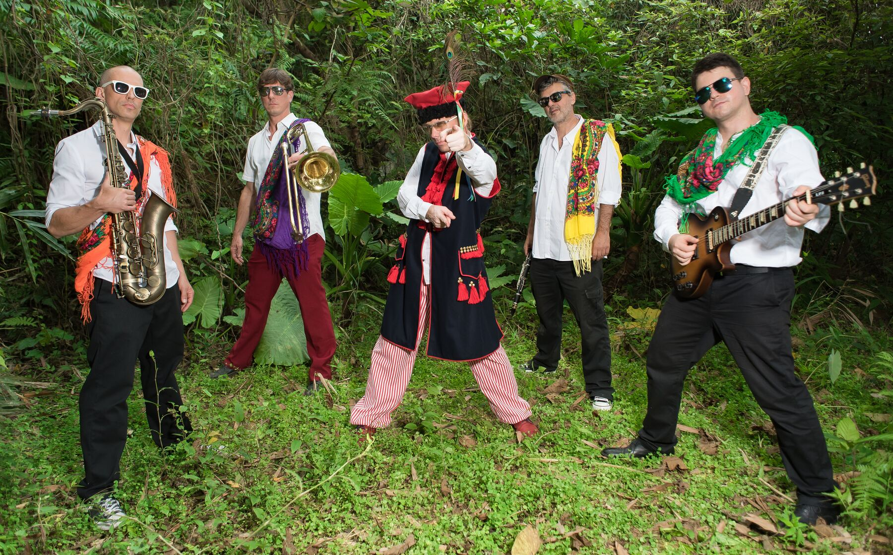
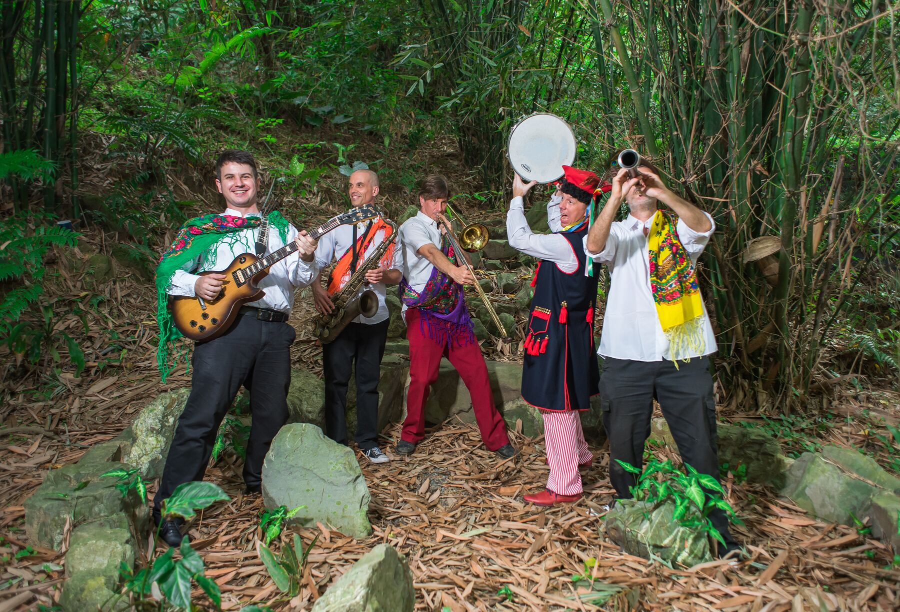

2021
April 24 · Tiger Mountain
The second Taipei Veggie Fest featured Balkazar among its live acts. Taipei Times highlighted the festival and named the band.
Balkazar live history
Two editions at Tiger Mountain, and coverage of Balkazar's main-stage appearance and festival photographs.
Past appearances
A look back at the shows, with photos and links to the original event pages.
← All festivals
The second Taipei Veggie Fest featured Balkazar among its live acts. Taipei Times highlighted the festival and named the band.
Taiwan News named Balkazar among the main-stage acts and published a band photograph credited to the festival.
From the archive
Balkazar Veggie Fest photo collection. Photos from our shows over the years.


Want Balkazar at your event? Get in touch ↗